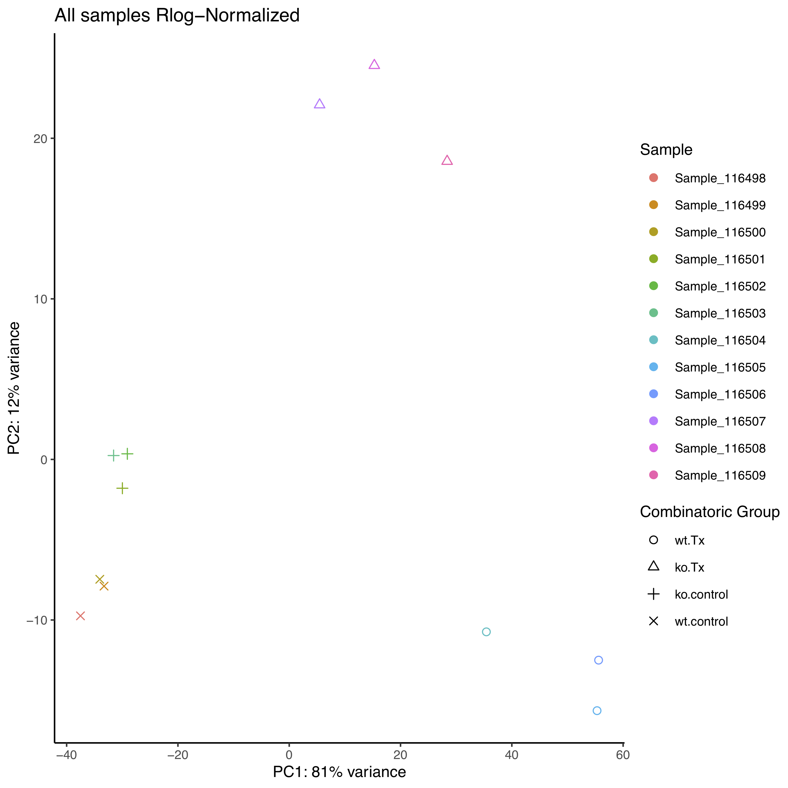
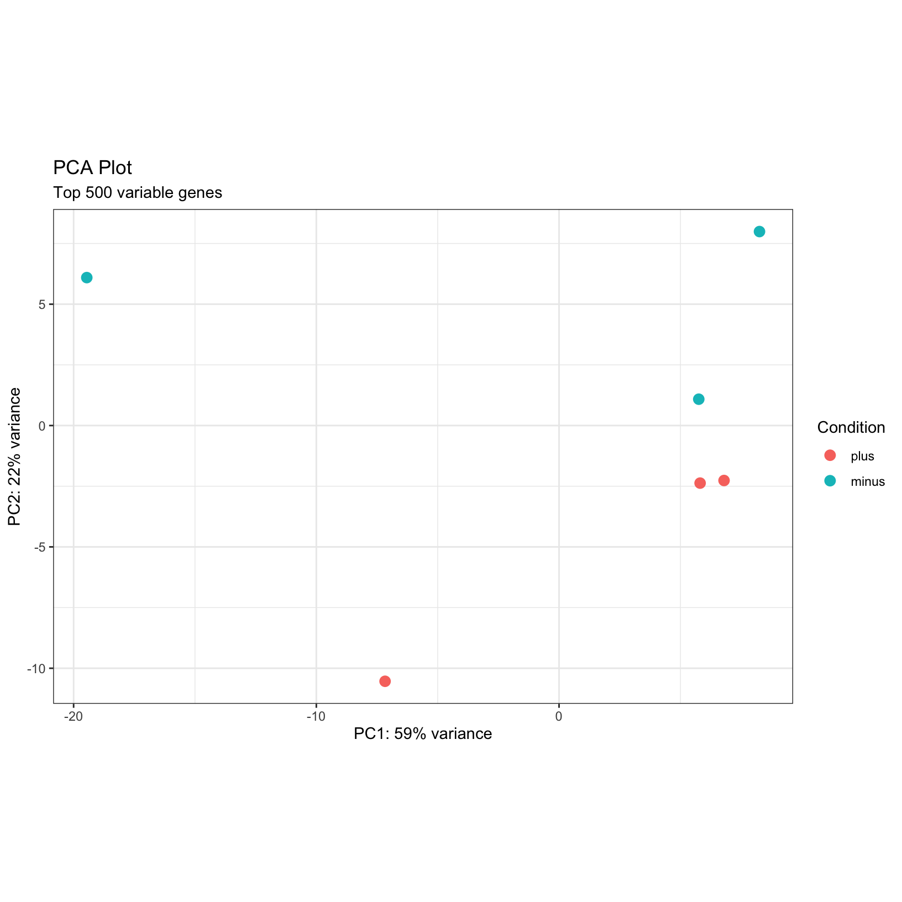

Objectives
- Generate common QC visualizations
- Understand how to interpret QC visualizations
- Understand when to revise the model used in the DESeq2
initialization
- Understand the pitfalls of post-hoc analysis
- Describe the causes and implications of batch effect or other QC
issues in an RNA-Seq experiment
Differential Expression Workflow
Prior to testing for differential expression between our comparisons
of interest, we’ll first generate plots that will assess how well our
samples match up with our expectations (based on their treatment groups)
and what we might expect to see from our differential expression
comparisons.

QC Visualizations
We have discussed some aspects of quality control assessment at the
sequencing level. Today we will outline sample-level and gene-level
quality control assessments to determine what we might expect for our
differential expression comparisons.
To do this, we will first assess the similarity of our samples by
using principal component analysis (PCA). This will allow us to
determine how well patterns in the data fits our expectations from the
experiments design and possible sources of variation.
Other common visualizations that we generate for our analyses include
expression heatmaps, sample correlation heatmaps, and boxplots of raw
and/or normalized counts, the code for which (due to time restrictions)
can be found as bonus content through the materials for today and in the
bonus content module.
Principal Component Analysis
A common and very useful plot for evaluating how well our samples
cluster by treatment groups are Principal Component Analysis (PCA)
plots. PCA is used to emphasize variation and bring out patterns in
large datasets by using dimensionality redution.
This image from a
helpful step by step explaination of PCA helps to illustrate the
principal component projections for two genes measured in approximately
60 mouse samples. Generally, this process is repeated and after each
gene’s contribution to a principal component or weight is determined,
the expression and weight are summed across genes for each sample to
calculate a value for each principal component.

Note: A more detailed overview of the PCA procedure
is outlined in a
Harvard Chan Bioinformatic Core training module and is based on a
more thorough description presented in a StatQuest’s
video. Additionally, this TowardsDataScience
blog post goes through the math behind PCAs.
Interpreting PCA plots
For most bulk RNA-seq experiments, we expect the majority of the
total variance to be explained by the first two or three principal
components. In the following plot, principal component 1 (PC1) explains
~80% of the variance in our data while principal component 2 (PC2)
explains ~12% of the variance, which fits that expections.

Question
How might we interpret the variance explained by each principal
component in the context of the labeled sample points?
For more information, this helpful
overview of PCA basics walks through both the generation and
interpretation of PCA plots.
Evaluating batch effects or confounders
PCA plots are also useful for evaluating the impact of factors other
than the experimental treatment or group. At times, batch effects can be
quite obvious, such as this example from the DESeq2
vignette, where samples within each treatment group look staggered
into two subgroups.
It turns out this experiment contained samples sequenced single-end
and paired-end. If we color only by sequencing run type (paired-end
vs. single-end), we see that PC2 (29% of variance) is primarily
explained by this technical covariate.

However, the samples are clearly seperated by experimental condition
on PC1 and since we have non-confounded batches, if we
saw this pattern in our data we could incorporate the technical
covariate into our model design, such as outlined in the DESeq2
vignette.
Click for complex design discussion
In experiments with more complex designs, such as when there are
interesecting/multiple treatment conditions, it can be less clear what
covariants are influencing expression, such as illustrated from this
documenation for a microarray analysis tool. From the PCA labeled by
experimental treatment, we see that samples from the treatment group do
not cluster together and that there is high variance across all
treatment groups.  However, when
the plot is color coded by the technical batches of probe labeling, we
see that the patterns in the data are better explained by batch than the
experimental conditions.
However, when
the plot is color coded by the technical batches of probe labeling, we
see that the patterns in the data are better explained by batch than the
experimental conditions. 
Create a PCA
We’ve already loaded the libraries we need for this module. We have
also thought ahead in the previous module and created the
outputs/figures and outputs/tables
directories.
Below, we will plot the rlog normalized data and generate the PCA
projections for the top 500 using the plotPCA function from
DESeq2, specifying condition as the condition of interest,
and view the simple plot generated by the function.
pca_plot = plotPCA(rld, intgroup = c('condition'), ntop = 500)
pca_plot

The samples don’t appear to cluster too tightly on their
condition, but we do observe that they do separate in PC2.
With real data, it is often the case that data doesn’t cluster as well
as you’d expect, or that the covariate of interest is not associated
with the first (or sometimes second or third) principal component. That
doesn’t necessarily mean the experiment is a failure, but it does raise
questions such as “What is associated with PC1?” Sometimes we can’t
answer a question like this if we don’t have any sample phenotype to
color in the PCA.
Next, let’s save this plot as a file in our
outputs/figures folder. The “base R” way is to:
pdf(file = file.path('outputs', 'figures', 'PCA_rlog_condition.pdf'), width = 6, height = 6)
pca_plot
dev.off()
Alternatively, since pca_plot is a ggplot,
we can use ggsave().
ggsave(
filename = file.path('outputs', 'figures', 'PCA_rlog_condition.pdf'),
plot = pca_plot,
width = 6, height = 6, units = 'in')
Exercise - Customize the PCA
Since the pca_plot object is a ggplot–you
can see this with class(pca_plot)–we can use what we
learned at the end of the Computational Foundations Workshop to modify
this plot as we might see necessary. Try doing the following to the
pca_plot:
- Add a title and subtitle to the plot using the
labs()
function.
- Change the theme of the plot with
theme_bw().
- Challenge: Change the legend title to “Condition”. Hint, you can do
this with the
labs() function too, using the corresponding
aesthetic mapping (e.g. “color”).
Remember ggplot2 adds plot components in layers, and you
can add additional layers with the + sign. So if the plot
already exists as an object, as pca_plot does in this case,
you can add to it like pca_plot + ...
Solution
Here is one possible answer:
pca_plot +
labs(
title = 'PCA Plot',
subtitle = 'Top 500 variable genes',
color = 'Condition') +
theme_bw()

Checkpoint: If you generated and saved the
pca_plot PCA plot, please indicate with the green ‘check’
button. Otherwise, please use use the red ‘x’ button in your zoom
reaction panel to have this step repeated.
Breakout Exercise 1 - Imagine a heatmap
Plotting the expression values across all samples for the top
variable genes in an experiment can help to visualize how samples
cluster together by their expression profiles. When combined with
phenotypic data, it can help show how samples with different treatments
behave relative to one another. Let’s work through this exercise in
small groups and generate a heatmap of the data we’ve been working
with.
Link to exercise
Download plots
Rstudio server allows us to download files through the interactive
file panel on the right side. If we navigate into the plot subfolder and
select the PCAplot_rlog_condition.pdf or the file, we can
then click the blue gear symbol labeled More and select
Export.... We should see a prompt regarding the name of the
file and if we click Download the file should show up in
your local “Downloads” folder.
Optional Content
Click for example code for generating a ScreePlot
A screeplot is a way to visualize the variance explained by all
principal components. To generate a scree plot, the PCA results need to
be used independently of plotting, such as described by this statquest
post and replicated below.
# generate PCA loadings
pca = prcomp(t(assay(rld)), scale=TRUE)
## get the scree information
pca.var = pca$sdev^2
scree = pca.var/sum(pca.var)
p = barplot((scree[1:10]*100), main="Scree Plot", xlab="Principal Component", ylab="Percent Variation")

print(p)
[,1]
[1,] 0.7
[2,] 1.9
[3,] 3.1
[4,] 4.3
[5,] 5.5
[6,] 6.7
[7,] 7.9
[8,] 9.1
[9,] 10.3
[10,] 11.5
We can see that the majority (~65%) of the variance across our samples
is explained by the first three principal components, giving us some
additional confidence regarding the quality of our data. In these scree
plot examples from BioTuring, the plot on the left fits what we would
expect for a dataset with high signal from the experimental treatment,
where the majority of the variance is explained by the first few
principal components. The plot on the right illustrates a scenario where
the variance is distributed across many components, which could be due
to low signal from the experimental treatment, complex experimental
design, or confounding factors. image: 
Click for code for a plot of dispersion estimates
We can visualize the dispersion estimates with the
plotDispEsts function. This plot shows the the DESeq2
normalization results for our data, which centers on shrinking the
variance across all genes to better fit the expected spread at a given
expression level.
plotDispEsts(dds)
Above is the raw data plotted in black, the fitted (or expected)
dispersion in red, and the normalized data with scaled variance in blue.
Since we have fairly small sample sizes for each condition, we see
shrinkage for many genes but a reasonable correlation between the
expression level and dispersions.
This HBC
tutorial has a more detailed overview of estimating size factors,
estimating gene dispersion, and the shrinkage procedure, as well as
examples of concerning dispersion plots that may suggest reassessing
quality of the experimental data.
Summary
In this section, we:
- Discussed variance within treatment groups
- Discussed technical artifacts, including batches
- Learned to generate PCA plots
Sources
These materials have been adapted and extended from materials listed
above. These are open access materials distributed under the terms of
the Creative
Commons Attribution license (CC BY 4.0), which permits unrestricted
use, distribution, and reproduction in any medium, provided the original
author and source are credited.
LS0tCnRpdGxlOiAiTW9kdWxlIDA5OiBTYW1wbGUgUUMiCmF1dGhvcjogIlVNIEJpb2luZm9ybWF0aWNzIENvcmUiCmRhdGU6ICJgciBTeXMuRGF0ZSgpYCIKb3V0cHV0OgogICAgICAgIGh0bWxfZG9jdW1lbnQ6CiAgICAgICAgICAgIGluY2x1ZGVzOgogICAgICAgICAgICAgICAgaW5faGVhZGVyOiBoZWFkZXIuaHRtbAogICAgICAgICAgICB0aGVtZTogcGFwZXIKICAgICAgICAgICAgdG9jOiB0cnVlCiAgICAgICAgICAgIHRvY19kZXB0aDogNAogICAgICAgICAgICB0b2NfZmxvYXQ6IHRydWUKICAgICAgICAgICAgbnVtYmVyX3NlY3Rpb25zOiBmYWxzZQogICAgICAgICAgICBmaWdfY2FwdGlvbjogdHJ1ZQogICAgICAgICAgICBtYXJrZG93bjogR0ZNCiAgICAgICAgICAgIGNvZGVfZG93bmxvYWQ6IHRydWUKLS0tCgo8c3R5bGUgdHlwZT0idGV4dC9jc3MiPgpib2R5LCB0ZCB7CiAgIGZvbnQtc2l6ZTogMThweDsKfQpjb2RlLnJ7CiAgZm9udC1zaXplOiAxMnB4Owp9CnByZSB7CiAgZm9udC1zaXplOiAxMnB4Cn0KPC9zdHlsZT4KCmBgYHtyLCBpbmNsdWRlID0gRkFMU0V9CnNvdXJjZSgiLi4vYmluL2NodW5rLW9wdGlvbnMuUiIpCmtuaXRyX2ZpZ19wYXRoKCIwOS0iKQpgYGAKCj4gIyBPYmplY3RpdmVzIHsudW5saXN0ZWQgLnVubnVtYmVyZWR9Cj4gKiBHZW5lcmF0ZSBjb21tb24gUUMgdmlzdWFsaXphdGlvbnMKPiAqIFVuZGVyc3RhbmQgaG93IHRvIGludGVycHJldCBRQyB2aXN1YWxpemF0aW9ucwo+ICogVW5kZXJzdGFuZCB3aGVuIHRvIHJldmlzZSB0aGUgbW9kZWwgdXNlZCBpbiB0aGUgREVTZXEyIGluaXRpYWxpemF0aW9uCj4gKiBVbmRlcnN0YW5kIHRoZSBwaXRmYWxscyBvZiBwb3N0LWhvYyBhbmFseXNpcwo+ICogRGVzY3JpYmUgdGhlIGNhdXNlcyBhbmQgaW1wbGljYXRpb25zIG9mIGJhdGNoIGVmZmVjdCBvciBvdGhlciBRQyBpc3N1ZXMgaW4gYW4gUk5BLVNlcSBleHBlcmltZW50CgoKYGBge3IgTW9kdWxlcywgZXZhbD1UUlVFLCBlY2hvPUZBTFNFLCBtZXNzYWdlPUZBTFNFLCB3YXJuaW5nPUZBTFNFfQpsaWJyYXJ5KERFU2VxMikKbGlicmFyeShnZ3Bsb3QyKQpsaWJyYXJ5KHRpZHlyKQpsaWJyYXJ5KGRwbHlyKQpsaWJyYXJ5KG1hdHJpeFN0YXRzKQpsaWJyYXJ5KGdncmVwZWwpCmxpYnJhcnkocGhlYXRtYXApCmxpYnJhcnkoUkNvbG9yQnJld2VyKQojIGxvYWQoInJkYXRhL1J1bm5pbmdEYXRhLlJEYXRhIikKYGBgCgojIERpZmZlcmVudGlhbCBFeHByZXNzaW9uIFdvcmtmbG93IHsudW5saXN0ZWQgLnVubnVtYmVyZWR9CgpQcmlvciB0byB0ZXN0aW5nIGZvciBkaWZmZXJlbnRpYWwgZXhwcmVzc2lvbiBiZXR3ZWVuIG91ciBjb21wYXJpc29ucyBvZiBpbnRlcmVzdCwgd2UnbGwgZmlyc3QgZ2VuZXJhdGUgcGxvdHMgdGhhdCB3aWxsIGFzc2VzcyBob3cgd2VsbCBvdXIgc2FtcGxlcyBtYXRjaCB1cCB3aXRoIG91ciBleHBlY3RhdGlvbnMgKGJhc2VkIG9uIHRoZWlyIHRyZWF0bWVudCBncm91cHMpIGFuZCB3aGF0IHdlIG1pZ2h0IGV4cGVjdCB0byBzZWUgZnJvbSBvdXIgZGlmZmVyZW50aWFsIGV4cHJlc3Npb24gY29tcGFyaXNvbnMuCgohW10oLi9pbWFnZXMvd2F5ZmluZGVyL3dheWZpbmRlci1TYW1wbGVRQ1Zpei5wbmcpe3dpZHRoPTc1JX0KCi0tLQoKIyBRQyBWaXN1YWxpemF0aW9ucwoKV2UgaGF2ZSBkaXNjdXNzZWQgc29tZSBhc3BlY3RzIG9mIHF1YWxpdHkgY29udHJvbCBhc3Nlc3NtZW50IGF0IHRoZSBzZXF1ZW5jaW5nIGxldmVsLiBUb2RheSB3ZSB3aWxsIG91dGxpbmUgc2FtcGxlLWxldmVsIGFuZCBnZW5lLWxldmVsIHF1YWxpdHkgY29udHJvbCBhc3Nlc3NtZW50cyB0byBkZXRlcm1pbmUgd2hhdCB3ZSBtaWdodCBleHBlY3QgZm9yIG91ciBkaWZmZXJlbnRpYWwgZXhwcmVzc2lvbiBjb21wYXJpc29ucy4KClRvIGRvIHRoaXMsIHdlIHdpbGwgZmlyc3QgYXNzZXNzIHRoZSBzaW1pbGFyaXR5IG9mIG91ciBzYW1wbGVzIGJ5IHVzaW5nIHByaW5jaXBhbCBjb21wb25lbnQgYW5hbHlzaXMgKFBDQSkuIFRoaXMgd2lsbCBhbGxvdyB1cyB0byBkZXRlcm1pbmUgaG93IHdlbGwgcGF0dGVybnMgaW4gdGhlIGRhdGEgZml0cyBvdXIgZXhwZWN0YXRpb25zIGZyb20gdGhlIGV4cGVyaW1lbnRzIGRlc2lnbiBhbmQgcG9zc2libGUgc291cmNlcyBvZiB2YXJpYXRpb24uCgpPdGhlciBjb21tb24gdmlzdWFsaXphdGlvbnMgdGhhdCB3ZSBnZW5lcmF0ZSBmb3Igb3VyIGFuYWx5c2VzIGluY2x1ZGUgZXhwcmVzc2lvbiBoZWF0bWFwcywgc2FtcGxlIGNvcnJlbGF0aW9uIGhlYXRtYXBzLCBhbmQgYm94cGxvdHMgb2YgcmF3IGFuZC9vciBub3JtYWxpemVkIGNvdW50cywgdGhlIGNvZGUgZm9yIHdoaWNoIChkdWUgdG8gdGltZSByZXN0cmljdGlvbnMpIGNhbiBiZSBmb3VuZCBhcyBib251cyBjb250ZW50IHRocm91Z2ggdGhlIG1hdGVyaWFscyBmb3IgdG9kYXkgYW5kIGluIHRoZSBib251cyBjb250ZW50IG1vZHVsZS4KCiMgUHJpbmNpcGFsIENvbXBvbmVudCBBbmFseXNpcwoKQSBjb21tb24gYW5kIHZlcnkgdXNlZnVsIHBsb3QgZm9yIGV2YWx1YXRpbmcgaG93IHdlbGwgb3VyIHNhbXBsZXMgY2x1c3RlciBieSB0cmVhdG1lbnQgZ3JvdXBzIGFyZSBQcmluY2lwYWwgQ29tcG9uZW50IEFuYWx5c2lzIChQQ0EpIHBsb3RzLiBQQ0EgaXMgdXNlZCB0byBlbXBoYXNpemUgdmFyaWF0aW9uIGFuZCBicmluZyBvdXQgcGF0dGVybnMgaW4gbGFyZ2UgZGF0YXNldHMgYnkgdXNpbmcgZGltZW5zaW9uYWxpdHkgcmVkdXRpb24uCgpUaGlzIGltYWdlIGZyb20KW2EgaGVscGZ1bCBzdGVwIGJ5IHN0ZXAgZXhwbGFpbmF0aW9uIG9mIFBDQV0oaHR0cHM6Ly9ibG9nLmJpb3R1cmluZy5jb20vMjAxOC8wNi8xNC9wcmluY2lwYWwtY29tcG9uZW50LWFuYWx5c2lzLWV4cGxhaW5lZC1zaW1wbHkvKSBoZWxwcyB0byBpbGx1c3RyYXRlIHRoZSBwcmluY2lwYWwgY29tcG9uZW50IHByb2plY3Rpb25zIGZvciB0d28gZ2VuZXMgbWVhc3VyZWQgaW4gYXBwcm94aW1hdGVseSA2MCBtb3VzZSBzYW1wbGVzLiBHZW5lcmFsbHksIHRoaXMgcHJvY2VzcyBpcyByZXBlYXRlZCBhbmQgYWZ0ZXIgZWFjaCBnZW5lJ3MgY29udHJpYnV0aW9uIHRvIGEgcHJpbmNpcGFsIGNvbXBvbmVudCBvciB3ZWlnaHQgaXMgZGV0ZXJtaW5lZCwgdGhlIGV4cHJlc3Npb24gYW5kIHdlaWdodCBhcmUgc3VtbWVkIGFjcm9zcyBnZW5lcyBmb3IgZWFjaCBzYW1wbGUgdG8gY2FsY3VsYXRlIGEgdmFsdWUgZm9yIGVhY2ggcHJpbmNpcGFsIGNvbXBvbmVudC4KCiFbXSguL2ltYWdlcy9CbG9nX3BjYV82Yi5wbmcpCgo+KipOb3RlKio6IEEgbW9yZSBkZXRhaWxlZCBvdmVydmlldyBvZiB0aGUgUENBIHByb2NlZHVyZSBpcyBvdXRsaW5lZCBpbiBbYSBIYXJ2YXJkIENoYW4gQmlvaW5mb3JtYXRpYyBDb3JlIHRyYWluaW5nIG1vZHVsZV0oaHR0cHM6Ly9oYmN0cmFpbmluZy5naXRodWIuaW8vREdFX3dvcmtzaG9wL2xlc3NvbnMvcHJpbmNpcGFsX2NvbXBvbmVudF9hbmFseXNpcy5odG1sKSBhbmQgaXMgYmFzZWQgb24gYSBtb3JlIHRob3JvdWdoIGRlc2NyaXB0aW9uIHByZXNlbnRlZCBpbiBhIFtTdGF0UXVlc3TigJlzIHZpZGVvXShodHRwczovL3d3dy55b3V0dWJlLmNvbS93YXRjaD92PV9VVkhuZUJVQlcwKS4gQWRkaXRpb25hbGx5LCB0aGlzIFtUb3dhcmRzRGF0YVNjaWVuY2UgYmxvZyBwb3N0XShodHRwczovL3Rvd2FyZHNkYXRhc2NpZW5jZS5jb20vcHJpbmNpcGFsLWNvbXBvbmVudC1hbmFseXNpcy0zYzM5ZmJmNWNiOWQpIGdvZXMgdGhyb3VnaCB0aGUgbWF0aCBiZWhpbmQgUENBcy4KCiMjIEludGVycHJldGluZyBQQ0EgcGxvdHMKCkZvciBtb3N0IGJ1bGsgUk5BLXNlcSBleHBlcmltZW50cywgd2UgZXhwZWN0IHRoZSBtYWpvcml0eSBvZiB0aGUgdG90YWwgdmFyaWFuY2UgdG8gYmUgZXhwbGFpbmVkIGJ5IHRoZSBmaXJzdCB0d28gb3IgdGhyZWUgcHJpbmNpcGFsIGNvbXBvbmVudHMuIEluIHRoZSBmb2xsb3dpbmcgcGxvdCwgcHJpbmNpcGFsIGNvbXBvbmVudCAxIChQQzEpIGV4cGxhaW5zIH44MCUgb2YgdGhlIHZhcmlhbmNlIGluIG91ciBkYXRhIHdoaWxlIHByaW5jaXBhbCBjb21wb25lbnQgMiAoUEMyKSBleHBsYWlucyB+MTIlIG9mIHRoZSB2YXJpYW5jZSwgd2hpY2ggZml0cyB0aGF0IGV4cGVjdGlvbnMuCgohW10oaW1hZ2VzL1BDQXBsb3RfRmFuY3lfcmxvZ19rby5UeC5wbmcpe3dpZHRoPTc1JX0KCj4gIyBRdWVzdGlvbiB7LnVubGlzdGVkIC51bm51bWJlcmVkfQo+Cj4gSG93IG1pZ2h0IHdlIGludGVycHJldCB0aGUgdmFyaWFuY2UgZXhwbGFpbmVkIGJ5IGVhY2ggcHJpbmNpcGFsIGNvbXBvbmVudCBpbiB0aGUgY29udGV4dCBvZiB0aGUgbGFiZWxlZCBzYW1wbGUgcG9pbnRzPwoKRm9yIG1vcmUgaW5mb3JtYXRpb24sIHRoaXMgW2hlbHBmdWwgb3ZlcnZpZXcgb2YgUENBIGJhc2ljc10oaHR0cHM6Ly9ibG9nLmJpb3R1cmluZy5jb20vMjAxOC8wNi8xNC9wcmluY2lwYWwtY29tcG9uZW50LWFuYWx5c2lzLWV4cGxhaW5lZC1zaW1wbHkvKSB3YWxrcyB0aHJvdWdoIGJvdGggdGhlIGdlbmVyYXRpb24gYW5kIGludGVycHJldGF0aW9uIG9mIFBDQSBwbG90cy4KCiMjIEV2YWx1YXRpbmcgYmF0Y2ggZWZmZWN0cyBvciBjb25mb3VuZGVycwoKUENBIHBsb3RzIGFyZSBhbHNvIHVzZWZ1bCBmb3IgZXZhbHVhdGluZyB0aGUgaW1wYWN0IG9mIGZhY3RvcnMgb3RoZXIgdGhhbiB0aGUgZXhwZXJpbWVudGFsIHRyZWF0bWVudCBvciBncm91cC4gQXQgdGltZXMsIGJhdGNoIGVmZmVjdHMgY2FuIGJlIHF1aXRlIG9idmlvdXMsIHN1Y2ggYXMgdGhpcyBleGFtcGxlIGZyb20gdGhlIFtERVNlcTIgdmlnbmV0dGVdKGh0dHA6Ly9iaW9jb25kdWN0b3Iub3JnL3BhY2thZ2VzL2RldmVsL2Jpb2MvdmlnbmV0dGVzL0RFU2VxMi9pbnN0L2RvYy9ERVNlcTIuaHRtbCksIHdoZXJlIHNhbXBsZXMgd2l0aGluIGVhY2ggdHJlYXRtZW50IGdyb3VwIGxvb2sgc3RhZ2dlcmVkIGludG8gdHdvIHN1Ymdyb3Vwcy4KCiFbXSguL2ltYWdlcy9QQ0ExX0RFU2VxMlZpZ25ldHRlLnBuZykKCkl0IHR1cm5zIG91dCB0aGlzIGV4cGVyaW1lbnQgY29udGFpbmVkIHNhbXBsZXMgc2VxdWVuY2VkIHNpbmdsZS1lbmQgYW5kIHBhaXJlZC1lbmQuIElmIHdlIGNvbG9yIG9ubHkgYnkgc2VxdWVuY2luZyBydW4gdHlwZSAocGFpcmVkLWVuZCB2cy4gc2luZ2xlLWVuZCksIHdlIHNlZSB0aGF0IFBDMiAoMjklIG9mIHZhcmlhbmNlKSBpcyBwcmltYXJpbHkgZXhwbGFpbmVkIGJ5IHRoaXMgdGVjaG5pY2FsIGNvdmFyaWF0ZS4KCiFbXSguL2ltYWdlcy9QQ0EyX0RFU2VxMlZpZ25ldHRlLnBuZykKCkhvd2V2ZXIsIHRoZSBzYW1wbGVzIGFyZSBjbGVhcmx5IHNlcGVyYXRlZCBieSBleHBlcmltZW50YWwgY29uZGl0aW9uIG9uIFBDMSAqKmFuZCoqIHNpbmNlIHdlIGhhdmUgbm9uLWNvbmZvdW5kZWQgYmF0Y2hlcywgaWYgd2Ugc2F3IHRoaXMgcGF0dGVybiBpbiBvdXIgZGF0YSB3ZSBjb3VsZCBpbmNvcnBvcmF0ZSB0aGUgdGVjaG5pY2FsIGNvdmFyaWF0ZSBpbnRvIG91ciBtb2RlbCBkZXNpZ24sIHN1Y2ggYXMgb3V0bGluZWQgaW4gdGhlIFtERVNlcTIgdmlnbmV0dGVdKGh0dHA6Ly9iaW9jb25kdWN0b3Iub3JnL3BhY2thZ2VzL2RldmVsL2Jpb2MvdmlnbmV0dGVzL0RFU2VxMi9pbnN0L2RvYy9ERVNlcTIuaHRtbCNtdWx0aS1mYWN0b3ItZGVzaWducykuCgo8ZGV0YWlscz4KICAgIDxzdW1tYXJ5PipDbGljayBmb3IgY29tcGxleCBkZXNpZ24gZGlzY3Vzc2lvbio8L3N1bW1hcnk+CiAgICBJbiBleHBlcmltZW50cyB3aXRoIG1vcmUgY29tcGxleCBkZXNpZ25zLCBzdWNoIGFzIHdoZW4gdGhlcmUgYXJlIGludGVyZXNlY3RpbmcvbXVsdGlwbGUgdHJlYXRtZW50IGNvbmRpdGlvbnMsIGl0IGNhbiBiZSBsZXNzIGNsZWFyIHdoYXQgY292YXJpYW50cyBhcmUgaW5mbHVlbmNpbmcgZXhwcmVzc2lvbiwgc3VjaCBhcyBpbGx1c3RyYXRlZCBmcm9tIFt0aGlzIGRvY3VtZW5hdGlvbiBmb3IgYSBtaWNyb2FycmF5IGFuYWx5c2lzIHRvb2xdKGh0dHA6Ly93d3cubW9sbWluZS5jb20vbWFnbWEvZ2xvYmFsX2FuYWx5c2lzL2JhdGNoX2VmZmVjdC5odG1sKS4KICAgIEZyb20gdGhlIFBDQSBsYWJlbGVkIGJ5IGV4cGVyaW1lbnRhbCB0cmVhdG1lbnQsIHdlIHNlZSB0aGF0IHNhbXBsZXMgZnJvbSB0aGUgdHJlYXRtZW50IGdyb3VwIGRvIG5vdCBjbHVzdGVyIHRvZ2V0aGVyIGFuZCB0aGF0IHRoZXJlIGlzIGhpZ2ggdmFyaWFuY2UgYWNyb3NzIGFsbCB0cmVhdG1lbnQgZ3JvdXBzLgogICAgIVtdKC4vaW1hZ2VzL2JhdGNoX2V4MWIuanBnKQogICAgSG93ZXZlciwgd2hlbiB0aGUgcGxvdCBpcyBjb2xvciBjb2RlZCBieSB0aGUgdGVjaG5pY2FsIGJhdGNoZXMgb2YgcHJvYmUgbGFiZWxpbmcsIHdlIHNlZSB0aGF0IHRoZSBwYXR0ZXJucyBpbiB0aGUgZGF0YSBhcmUgYmV0dGVyIGV4cGxhaW5lZCBieSBiYXRjaCB0aGFuIHRoZSBleHBlcmltZW50YWwgY29uZGl0aW9ucy4KICAgICFbXSguL2ltYWdlcy9iYXRjaF9leDFjLmpwZykKPC9kZXRhaWxzPgo8YnI+CgojIENyZWF0ZSBhIFBDQQoKV2UndmUgYWxyZWFkeSBsb2FkZWQgdGhlIGxpYnJhcmllcyB3ZSBuZWVkIGZvciB0aGlzIG1vZHVsZS4gV2UgaGF2ZSBhbHNvIHRob3VnaHQgYWhlYWQgaW4gdGhlIHByZXZpb3VzIG1vZHVsZSBhbmQgY3JlYXRlZCB0aGUgYG91dHB1dHMvZmlndXJlc2AgYW5kIGBvdXRwdXRzL3RhYmxlc2AgZGlyZWN0b3JpZXMuCgpCZWxvdywgd2Ugd2lsbCBwbG90IHRoZSBybG9nIG5vcm1hbGl6ZWQgZGF0YSBhbmQgZ2VuZXJhdGUgdGhlIFBDQSBwcm9qZWN0aW9ucyBmb3IgdGhlIHRvcCA1MDAgdXNpbmcgdGhlIGBwbG90UENBYCBmdW5jdGlvbiBmcm9tIERFU2VxMiwgc3BlY2lmeWluZyBgY29uZGl0aW9uYCBhcyB0aGUgY29uZGl0aW9uIG9mIGludGVyZXN0LCBhbmQgdmlldyB0aGUgc2ltcGxlIHBsb3QgZ2VuZXJhdGVkIGJ5IHRoZSBmdW5jdGlvbi4KCmBgYHtyIFBDQXJsb2czfQpwY2FfcGxvdCA9IHBsb3RQQ0EocmxkLCBpbnRncm91cCA9IGMoJ2NvbmRpdGlvbicpLCBudG9wID0gNTAwKQpwY2FfcGxvdApgYGAKClRoZSBzYW1wbGVzIGRvbid0IGFwcGVhciB0byBjbHVzdGVyIHRvbyB0aWdodGx5IG9uIHRoZWlyIGBjb25kaXRpb25gLCBidXQgd2UgZG8gb2JzZXJ2ZSB0aGF0IHRoZXkgZG8gc2VwYXJhdGUgaW4gUEMyLiBXaXRoIHJlYWwgZGF0YSwgaXQgaXMgb2Z0ZW4gdGhlIGNhc2UgdGhhdCBkYXRhIGRvZXNuJ3QgY2x1c3RlciBhcyB3ZWxsIGFzIHlvdSdkIGV4cGVjdCwgb3IgdGhhdCB0aGUgY292YXJpYXRlIG9mIGludGVyZXN0IGlzIG5vdCBhc3NvY2lhdGVkIHdpdGggdGhlIGZpcnN0IChvciBzb21ldGltZXMgc2Vjb25kIG9yIHRoaXJkKSBwcmluY2lwYWwgY29tcG9uZW50LiBUaGF0IGRvZXNuJ3QgbmVjZXNzYXJpbHkgbWVhbiB0aGUgZXhwZXJpbWVudCBpcyBhIGZhaWx1cmUsIGJ1dCBpdCBkb2VzIHJhaXNlIHF1ZXN0aW9ucyBzdWNoIGFzICJXaGF0IGlzIGFzc29jaWF0ZWQgd2l0aCBQQzE/IiBTb21ldGltZXMgd2UgY2FuJ3QgYW5zd2VyIGEgcXVlc3Rpb24gbGlrZSB0aGlzIGlmIHdlIGRvbid0IGhhdmUgYW55IHNhbXBsZSBwaGVub3R5cGUgdG8gY29sb3IgaW4gdGhlIFBDQS4KCk5leHQsIGxldCdzIHNhdmUgdGhpcyBwbG90IGFzIGEgZmlsZSBpbiBvdXIgYG91dHB1dHMvZmlndXJlc2AgZm9sZGVyLiBUaGUgImJhc2UgUiIgd2F5IGlzIHRvOgoKYGBge3Igc2F2ZV9wY2FfYmFzZSwgZXZhbCA9IEZBTFNFfQpwZGYoZmlsZSA9IGZpbGUucGF0aCgnb3V0cHV0cycsICdmaWd1cmVzJywgJ1BDQV9ybG9nX2NvbmRpdGlvbi5wZGYnKSwgd2lkdGggPSA2LCBoZWlnaHQgPSA2KQpwY2FfcGxvdApkZXYub2ZmKCkKYGBgCgpBbHRlcm5hdGl2ZWx5LCBzaW5jZSBgcGNhX3Bsb3RgIGlzIGEgYGdncGxvdGAsIHdlIGNhbiB1c2UgYGdnc2F2ZSgpYC4KCmBgYHtyIHNhdmVfcGNhX2dnc2F2ZSwgZXZhbCA9IEZBTFNFfQpnZ3NhdmUoCiAgICBmaWxlbmFtZSA9IGZpbGUucGF0aCgnb3V0cHV0cycsICdmaWd1cmVzJywgJ1BDQV9ybG9nX2NvbmRpdGlvbi5wZGYnKSwKICAgIHBsb3QgPSBwY2FfcGxvdCwKICAgIHdpZHRoID0gNiwgaGVpZ2h0ID0gNiwgdW5pdHMgPSAnaW4nKQpgYGAKCj4gIyBFeGVyY2lzZSAtIEN1c3RvbWl6ZSB0aGUgUENBIHsudW5saXN0ZWQgLnVubnVtYmVyZWR9Cj4KPiBTaW5jZSB0aGUgYHBjYV9wbG90YCBvYmplY3QgaXMgYSBgZ2dwbG90YC0teW91IGNhbiBzZWUgdGhpcyB3aXRoIGBjbGFzcyhwY2FfcGxvdClgLS13ZSBjYW4gdXNlIHdoYXQgd2UgbGVhcm5lZCBhdCB0aGUgZW5kIG9mIHRoZSBDb21wdXRhdGlvbmFsIEZvdW5kYXRpb25zIFdvcmtzaG9wIHRvIG1vZGlmeSB0aGlzIHBsb3QgYXMgd2UgbWlnaHQgc2VlIG5lY2Vzc2FyeS4gVHJ5IGRvaW5nIHRoZSBmb2xsb3dpbmcgdG8gdGhlIGBwY2FfcGxvdGA6Cj4KPiAxLiBBZGQgYSB0aXRsZSBhbmQgc3VidGl0bGUgdG8gdGhlIHBsb3QgdXNpbmcgdGhlIGBsYWJzKClgIGZ1bmN0aW9uLgo+IDIuIENoYW5nZSB0aGUgdGhlbWUgb2YgdGhlIHBsb3Qgd2l0aCBgdGhlbWVfYncoKWAuCj4gMy4gQ2hhbGxlbmdlOiBDaGFuZ2UgdGhlIGxlZ2VuZCB0aXRsZSB0byAiQ29uZGl0aW9uIi4gSGludCwgeW91IGNhbiBkbyB0aGlzIHdpdGggdGhlIGBsYWJzKClgIGZ1bmN0aW9uIHRvbywgdXNpbmcgdGhlIGNvcnJlc3BvbmRpbmcgYWVzdGhldGljIG1hcHBpbmcgKGUuZy4gImNvbG9yIikuCj4KPiBSZW1lbWJlciBgZ2dwbG90MmAgYWRkcyBwbG90IGNvbXBvbmVudHMgaW4gbGF5ZXJzLCBhbmQgeW91IGNhbiBhZGQgYWRkaXRpb25hbCBsYXllcnMgd2l0aCB0aGUgYCtgIHNpZ24uIFNvIGlmIHRoZSBwbG90IGFscmVhZHkgZXhpc3RzIGFzIGFuIG9iamVjdCwgYXMgYHBjYV9wbG90YCBkb2VzIGluIHRoaXMgY2FzZSwgeW91IGNhbiBhZGQgdG8gaXQgbGlrZSBgcGNhX3Bsb3QgKyAuLi5gCgo8ZGV0YWlscz4KPHN1bW1hcnk+U29sdXRpb248L3N1bW1hcnk+CgpIZXJlIGlzIG9uZSBwb3NzaWJsZSBhbnN3ZXI6CgpgYGB7ciBjdXN0b21pemVfcGNhX2V4ZXJjaXNlfQpwY2FfcGxvdCArCiAgICBsYWJzKAogICAgICAgIHRpdGxlID0gJ1BDQSBQbG90JywKICAgICAgICBzdWJ0aXRsZSA9ICdUb3AgNTAwIHZhcmlhYmxlIGdlbmVzJywKICAgICAgICBjb2xvciA9ICdDb25kaXRpb24nKSArCiAgICB0aGVtZV9idygpCmBgYAo8L2RldGFpbHM+Cjxicj4KCioqQ2hlY2twb2ludCoqOiAqSWYgeW91IGdlbmVyYXRlZCBhbmQgc2F2ZWQgdGhlIGBwY2FfcGxvdGAgUENBIHBsb3QsIHBsZWFzZSBpbmRpY2F0ZSB3aXRoIHRoZSBncmVlbiAnY2hlY2snIGJ1dHRvbi4gT3RoZXJ3aXNlLCBwbGVhc2UgdXNlICB1c2UgdGhlIHJlZCAneCcgYnV0dG9uIGluIHlvdXIgem9vbSByZWFjdGlvbiBwYW5lbCB0byBoYXZlIHRoaXMgc3RlcCByZXBlYXRlZC4qCgo+ICMgQnJlYWtvdXQgRXhlcmNpc2UgMSAtIEltYWdpbmUgYSBoZWF0bWFwIHsudW5saXN0ZWQgLnVubnVtYmVyZWR9Cj4KPiBQbG90dGluZyB0aGUgZXhwcmVzc2lvbiB2YWx1ZXMgYWNyb3NzIGFsbCBzYW1wbGVzIGZvciB0aGUgdG9wIHZhcmlhYmxlIGdlbmVzIGluIGFuIGV4cGVyaW1lbnQgY2FuIGhlbHAgdG8gdmlzdWFsaXplIGhvdyBzYW1wbGVzIGNsdXN0ZXIgdG9nZXRoZXIgYnkgdGhlaXIgZXhwcmVzc2lvbiBwcm9maWxlcy4gV2hlbiBjb21iaW5lZCB3aXRoIHBoZW5vdHlwaWMgZGF0YSwgaXQgY2FuIGhlbHAgc2hvdyBob3cgc2FtcGxlcyB3aXRoIGRpZmZlcmVudCB0cmVhdG1lbnRzIGJlaGF2ZSByZWxhdGl2ZSB0byBvbmUgYW5vdGhlci4gTGV0J3Mgd29yayB0aHJvdWdoIHRoaXMgZXhlcmNpc2UgaW4gc21hbGwgZ3JvdXBzIGFuZCBnZW5lcmF0ZSBhIGhlYXRtYXAgb2YgdGhlIGRhdGEgd2UndmUgYmVlbiB3b3JraW5nIHdpdGguCj4KPiBbTGluayB0byBleGVyY2lzZV0oTW9kdWxlMDlhX2JyZWFrb3V0Lmh0bWwpCgoKIyBEb3dubG9hZCBwbG90cwoKUnN0dWRpbyBzZXJ2ZXIgYWxsb3dzIHVzIHRvIGRvd25sb2FkIGZpbGVzIHRocm91Z2ggdGhlIGludGVyYWN0aXZlIGZpbGUgcGFuZWwgb24gdGhlIHJpZ2h0IHNpZGUuIElmIHdlIG5hdmlnYXRlIGludG8gdGhlIHBsb3Qgc3ViZm9sZGVyIGFuZCBzZWxlY3QgdGhlIGBQQ0FwbG90X3Jsb2dfY29uZGl0aW9uLnBkZmAgb3IgdGhlICBmaWxlLCB3ZSBjYW4gdGhlbiBjbGljayB0aGUgYmx1ZSBnZWFyIHN5bWJvbCBsYWJlbGVkIGBNb3JlYCBhbmQgc2VsZWN0IGBFeHBvcnQuLi5gLiBXZSBzaG91bGQgc2VlIGEgcHJvbXB0IHJlZ2FyZGluZyB0aGUgbmFtZSBvZiB0aGUgZmlsZSBhbmQgaWYgd2UgY2xpY2sgYERvd25sb2FkYCB0aGUgZmlsZSBzaG91bGQgc2hvdyB1cCBpbiB5b3VyIGxvY2FsICJEb3dubG9hZHMiIGZvbGRlci4KCiMgT3B0aW9uYWwgQ29udGVudAoKPGRldGFpbHM+CiAgICA8c3VtbWFyeT4qQ2xpY2sgZm9yIGV4YW1wbGUgY29kZSBmb3IgZ2VuZXJhdGluZyBhIFNjcmVlUGxvdCo8L3N1bW1hcnk+CiAgICAgQSBzY3JlZXBsb3QgaXMgYSB3YXkgdG8gdmlzdWFsaXplIHRoZSB2YXJpYW5jZSBleHBsYWluZWQgYnkgYWxsIHByaW5jaXBhbCBjb21wb25lbnRzLgogICAgIFRvIGdlbmVyYXRlIGEgc2NyZWUgcGxvdCwgdGhlIFBDQSByZXN1bHRzIG5lZWQgdG8gYmUgdXNlZCBpbmRlcGVuZGVudGx5IG9mIHBsb3R0aW5nLCBzdWNoIGFzIGRlc2NyaWJlZCBieSBbdGhpcyBzdGF0cXVlc3QgcG9zdF0oaHR0cHM6Ly9zdGF0cXVlc3Qub3JnL3BjYS1jbGVhcmx5LWV4cGxhaW5lZC8pIGFuZCByZXBsaWNhdGVkIGJlbG93LgoKYGBge3IgU2NyZWVQbG90fQojIGdlbmVyYXRlIFBDQSBsb2FkaW5ncwpwY2EgPSBwcmNvbXAodChhc3NheShybGQpKSwgc2NhbGU9VFJVRSkKCiMjIGdldCB0aGUgc2NyZWUgaW5mb3JtYXRpb24KcGNhLnZhciA9IHBjYSRzZGV2XjIKc2NyZWUgPSBwY2EudmFyL3N1bShwY2EudmFyKQpwID0gYmFycGxvdCgoc2NyZWVbMToxMF0qMTAwKSwgbWFpbj0iU2NyZWUgUGxvdCIsIHhsYWI9IlByaW5jaXBhbCBDb21wb25lbnQiLCB5bGFiPSJQZXJjZW50IFZhcmlhdGlvbiIpCnByaW50KHApCmBgYAoKICAgIFdlIGNhbiBzZWUgdGhhdCB0aGUgbWFqb3JpdHkgKH42NSUpIG9mIHRoZSB2YXJpYW5jZSBhY3Jvc3Mgb3VyIHNhbXBsZXMgaXMgZXhwbGFpbmVkIGJ5IHRoZSBmaXJzdCB0aHJlZSBwcmluY2lwYWwgY29tcG9uZW50cywgZ2l2aW5nIHVzIHNvbWUgYWRkaXRpb25hbCBjb25maWRlbmNlIHJlZ2FyZGluZyB0aGUgcXVhbGl0eSBvZiBvdXIgZGF0YS4KICAgIEluIHRoZXNlIHNjcmVlIHBsb3QgZXhhbXBsZXMgZnJvbSBCaW9UdXJpbmcsIHRoZSBwbG90IG9uIHRoZSBsZWZ0IGZpdHMgd2hhdCB3ZSB3b3VsZCBleHBlY3QgZm9yIGEgZGF0YXNldCB3aXRoIGhpZ2ggc2lnbmFsIGZyb20gdGhlIGV4cGVyaW1lbnRhbCB0cmVhdG1lbnQsIHdoZXJlIHRoZSBtYWpvcml0eSBvZiB0aGUgdmFyaWFuY2UgaXMgZXhwbGFpbmVkIGJ5IHRoZSBmaXJzdCBmZXcgcHJpbmNpcGFsIGNvbXBvbmVudHMuIFRoZSBwbG90IG9uIHRoZSByaWdodCBpbGx1c3RyYXRlcyBhIHNjZW5hcmlvIHdoZXJlIHRoZSB2YXJpYW5jZSBpcyBkaXN0cmlidXRlZCBhY3Jvc3MgbWFueSBjb21wb25lbnRzLCB3aGljaCBjb3VsZCBiZSBkdWUgdG8gbG93IHNpZ25hbCBmcm9tIHRoZSBleHBlcmltZW50YWwgdHJlYXRtZW50LCBjb21wbGV4IGV4cGVyaW1lbnRhbCBkZXNpZ24sIG9yIGNvbmZvdW5kaW5nIGZhY3RvcnMuCmltYWdlOiAhW10oLi9pbWFnZXMvcHJvcG9ydGlvbi1vZi12YXJpYW5jZS1ibG9nLWhvcnouanBnKQo8L2RldGFpbHM+Cjxicj4KCjxkZXRhaWxzPgogICAgPHN1bW1hcnk+KkNsaWNrIGZvciBjb2RlIGZvciBhIHBsb3Qgb2YgZGlzcGVyc2lvbiBlc3RpbWF0ZXMqPC9zdW1tYXJ5PgogICAgV2UgY2FuIHZpc3VhbGl6ZSB0aGUgKipkaXNwZXJzaW9uIGVzdGltYXRlcyoqIHdpdGggdGhlIGBwbG90RGlzcEVzdHNgIGZ1bmN0aW9uLiBUaGlzIHBsb3Qgc2hvd3MgdGhlIHRoZSBERVNlcTIgbm9ybWFsaXphdGlvbiByZXN1bHRzIGZvciBvdXIgZGF0YSwgd2hpY2ggY2VudGVycyBvbiBzaHJpbmtpbmcgdGhlIHZhcmlhbmNlIGFjcm9zcyBhbGwgZ2VuZXMgdG8gYmV0dGVyIGZpdCB0aGUgZXhwZWN0ZWQgc3ByZWFkIGF0IGEgZ2l2ZW4gZXhwcmVzc2lvbiBsZXZlbC4KYGBge3IgQ2hlY2tEaXNwZXJzaW9uc30KcGxvdERpc3BFc3RzKGRkcykKYGBgCiAgICBBYm92ZSBpcyB0aGUgcmF3IGRhdGEgcGxvdHRlZCBpbiBibGFjaywgdGhlIGZpdHRlZCAob3IgZXhwZWN0ZWQpIGRpc3BlcnNpb24gaW4gcmVkLCBhbmQgdGhlIG5vcm1hbGl6ZWQgZGF0YSB3aXRoIHNjYWxlZCB2YXJpYW5jZSBpbiBibHVlLiBTaW5jZSB3ZSBoYXZlIGZhaXJseSBzbWFsbCBzYW1wbGUgc2l6ZXMgZm9yIGVhY2ggY29uZGl0aW9uLCB3ZSBzZWUgc2hyaW5rYWdlIGZvciBtYW55IGdlbmVzIGJ1dCBhIHJlYXNvbmFibGUgY29ycmVsYXRpb24gYmV0d2VlbiB0aGUgZXhwcmVzc2lvbiBsZXZlbCBhbmQgZGlzcGVyc2lvbnMuCgogICAgVGhpcyBbSEJDIHR1dG9yaWFsXShodHRwczovL2hiY3RyYWluaW5nLmdpdGh1Yi5pby9ER0Vfd29ya3Nob3AvbGVzc29ucy8wNF9ER0VfREVTZXEyX2FuYWx5c2lzLmh0bWwpIGhhcyBhIG1vcmUgZGV0YWlsZWQgb3ZlcnZpZXcgb2YgZXN0aW1hdGluZyBzaXplIGZhY3RvcnMsIGVzdGltYXRpbmcgZ2VuZSBkaXNwZXJzaW9uLCBhbmQgdGhlIHNocmlua2FnZSBwcm9jZWR1cmUsIGFzIHdlbGwgYXMgZXhhbXBsZXMgb2YgY29uY2VybmluZyBkaXNwZXJzaW9uIHBsb3RzIHRoYXQgbWF5IHN1Z2dlc3QgcmVhc3Nlc3NpbmcgcXVhbGl0eSBvZiB0aGUgZXhwZXJpbWVudGFsIGRhdGEuCjwvZGV0YWlscz4KPGJyPgoKIyBTdW1tYXJ5CgpJbiB0aGlzIHNlY3Rpb24sIHdlOgoKKiBEaXNjdXNzZWQgdmFyaWFuY2Ugd2l0aGluIHRyZWF0bWVudCBncm91cHMKKiBEaXNjdXNzZWQgdGVjaG5pY2FsIGFydGlmYWN0cywgaW5jbHVkaW5nIGJhdGNoZXMKKiBMZWFybmVkIHRvIGdlbmVyYXRlIFBDQSBwbG90cwoKLS0tCgojIFNvdXJjZXMKCiogSEJDIFFDIHR1dG9yaWFsOiBodHRwczovL2hiY3RyYWluaW5nLmdpdGh1Yi5pby9ER0Vfd29ya3Nob3AvbGVzc29ucy8wM19ER0VfUUNfYW5hbHlzaXMuaHRtbAoqIERldGFpbGVkIEhlYXRtYXAgdHV0b3JpYWwgZnJvbSBHYWxheHk6IGh0dHBzOi8vdHJhaW5pbmcuZ2FsYXh5cHJvamVjdC5vcmcvdHJhaW5pbmctbWF0ZXJpYWwvdG9waWNzL3RyYW5zY3JpcHRvbWljcy90dXRvcmlhbHMvcm5hLXNlcS12aXotd2l0aC1oZWF0bWFwMi90dXRvcmlhbC5odG1sCiogUENBIE92ZXJ2aWV3OiBodHRwczovL2Jsb2cuYmlvdHVyaW5nLmNvbS8yMDE4LzA2LzE0L3ByaW5jaXBhbC1jb21wb25lbnQtYW5hbHlzaXMtZXhwbGFpbmVkLXNpbXBseS8KCmBgYHtyIFdyaXRlT3V0LlJEYXRhLCBldmFsPUZBTFNFLCBlY2hvPUZBTFNFLCBtZXNzYWdlPUZBTFNFLCB3YXJuaW5nPUZBTFNFfQojSGlkZGVuIGNvZGUgYmxvY2sgdG8gd3JpdGUgb3V0IGRhdGEgZm9yIGtuaXR0aW5nCiMgc2F2ZS5pbWFnZShmaWxlID0gInJkYXRhL1J1bm5pbmdEYXRhLlJEYXRhIikKYGBgCgotLS0KCgpUaGVzZSBtYXRlcmlhbHMgaGF2ZSBiZWVuIGFkYXB0ZWQgYW5kIGV4dGVuZGVkIGZyb20gbWF0ZXJpYWxzIGxpc3RlZCBhYm92ZS4gVGhlc2UgYXJlIG9wZW4gYWNjZXNzIG1hdGVyaWFscyBkaXN0cmlidXRlZCB1bmRlciB0aGUgdGVybXMgb2YgdGhlIFtDcmVhdGl2ZSBDb21tb25zIEF0dHJpYnV0aW9uIGxpY2Vuc2UgKENDIEJZIDQuMCldKGh0dHA6Ly9jcmVhdGl2ZWNvbW1vbnMub3JnL2xpY2Vuc2VzL2J5LzQuMC8pLCB3aGljaCBwZXJtaXRzIHVucmVzdHJpY3RlZCB1c2UsIGRpc3RyaWJ1dGlvbiwgYW5kIHJlcHJvZHVjdGlvbiBpbiBhbnkgbWVkaXVtLCBwcm92aWRlZCB0aGUgb3JpZ2luYWwgYXV0aG9yIGFuZCBzb3VyY2UgYXJlIGNyZWRpdGVkLgo=